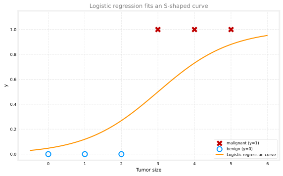
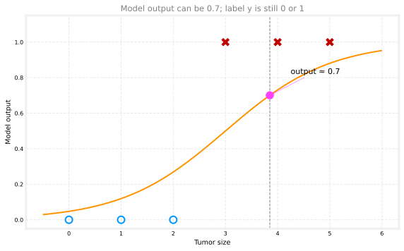
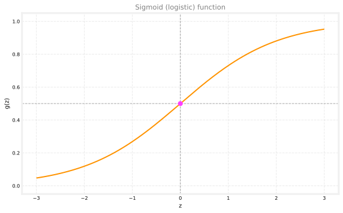

import numpy as np
# Tumor size (cm) vs malignant/benign label
x_train = np.array([0.0, 1, 2, 3, 4, 5])
y_train = np.array([0, 0, 0, 1, 1, 1])Logistic Regression
machine-learning
supervised-learning
classification
On the classification page you saw why a straight line is a poor fit for yes/no labels. Logistic regression is probably the single most widely used classification algorithm in the world. It outputs a value between 0 and 1 that you can read as the chance of the positive class, then map to a final label of 0 or 1.
We continue with the tumor example: malignant tumors are the positive class (\(y = 1\)), and benign tumors are the negative class (\(y = 0\)).
Review Questions
1. What type of problem is logistic regression designed for?
TipAnswer
Binary classification, where the target \(y\) takes on only two values (such as 0 and 1).
S-Shaped Fit for Classification
Recall the tumor data: tumor size on the horizontal axis and label \(y\) on the vertical axis (only 0 or 1).
Linear regression is not a good algorithm for this problem. Logistic regression instead fits an S-shaped curve that stays between 0 and 1.

For a patient whose tumor size is marked on the plot below, the model might output 0.7. That number is not the final label. The true label \(y\) is still only ever 0 or 1. The value 0.7 is the model output before you turn it into a class prediction (you will see how in the next section on the decision boundary).

Review Questions
1. Can the final training label \(y\) be 0.7 in binary classification?
TipAnswer
No. Labels are 0 or 1. A value like 0.7 is a model output (a probability-like score), not the ground-truth label.
Sigmoid Function
To build logistic regression, you need a function that squashes any real number into the range \((0, 1)\). That function is the sigmoid function, also called the logistic function. We write it as \(g(z)\):
\[ g(z) = \frac{1}{1 + e^{-z}} \]
Here \(e \approx 2.72\) is Euler number, a mathematical constant (like \(\pi\)).
The plot below shows \(g(z)\) for \(z\) between \(-3\) and \(3\). The horizontal axis is labeled \(z\) because this graph is about the input to \(g\), not tumor size directly.

Large positive \(z\): if \(z = 100\), then \(e^{-z}\) is tiny, so \(g(z) \approx \frac{1}{1 + 0} = 1\).
Large negative \(z\): if \(z = -100\), then \(e^{-z}\) is huge, so \(g(z) \approx \frac{1}{\text{giant number}} \approx 0\).
At \(z = 0\): \(e^{-0} = 1\), so \(g(0) = \frac{1}{1 + 1} = 0.5\). That is why the curve crosses the vertical axis at 0.5.
Review Questions
1. What is \(g(0)\) for the sigmoid function?
TipAnswer
0.5, because \(g(0) = \frac{1}{1 + e^{0}} = \frac{1}{2}\).
1. For very large positive \(z\), is \(g(z)\) closer to 0 or to 1?
TipAnswer
Closer to 1. The denominator \(1 + e^{-z}\) approaches 1 when \(e^{-z}\) is tiny.
Logistic Regression Model
Logistic regression is built in two steps.
Step 1: compute a linear score (the same idea as linear regression):
\[ z = wx + b \]
For multiple features you would use \(z = \vec{w} \cdot \vec{x} + b\), but the tumor example uses a single feature \(x\).
Step 2: pass \(z\) through the sigmoid:
\[ f_{w,b}(x) = g(z) = g(wx + b) = \frac{1}{1 + e^{-(wx + b)}} \]
The model inputs a feature \(x\) (or feature vector \(\vec{x}\)) and outputs a number strictly between 0 and 1 (in practice, very close to 0 or 1 at the extremes, but never exactly 0 or 1 from the formula alone).
for x_val in [0.0, 2.0, 5.0]:
z_val = w_demo * x_val + b_demo
print(f"x = {x_val:.1f} -> z = {z_val:.1f} -> f(x) = {sigmoid(z_val):.3f}")x = 0.0 -> z = -3.0 -> f(x) = 0.047
x = 2.0 -> z = -1.0 -> f(x) = 0.269
x = 5.0 -> z = 2.0 -> f(x) = 0.881Review Questions
1. In \(f_{w,b}(x) = g(wx + b)\), what role does \(g\) play?
TipAnswer
\(g\) is the sigmoid. It maps the linear score \(z = wx + b\) into the range \((0, 1)\) so the output can be read as a probability-like value.
Interpreting the Output
Return to tumor classification. A useful way to read logistic regression output is:
\[ f_{w,b}(x) \approx P(y = 1 \mid x) \]
In words: given tumor size \(x\), the model output is the estimated probability that \(y = 1\) (malignant).
Example: if \(f_{w,b}(x) = 0.7\) for a patient, the model estimates a 70% chance that the true label is malignant (\(y = 1\)).
Because \(y\) must be either 0 or 1, the two probabilities add to 100%:
\[ P(y = 1 \mid x) + P(y = 0 \mid x) = 1 \]
So if the chance of \(y = 1\) is 0.7 (70%), the chance of \(y = 0\) is 0.3 (30%).
Review Questions
1. If \(f_{w,b}(x) = 0.7\), how should you interpret that number?
TipAnswer
The model estimates a 70% probability that \(y = 1\) (malignant) for that input \(x\).
1. If \(P(y = 1 \mid x) = 0.7\), what is \(P(y = 0 \mid x)\)?
TipAnswer
0.3 (30%), because the two probabilities must sum to 1.
Notation You May See Elsewhere
In research papers or blog posts, you might see:
\[ f_{w,b}(x) = P(y = 1 \mid x;\, w, b) \]
The semicolon reminds you that \(w\) and \(b\) are parameters that shape the computation. For this course, you do not need to memorize every symbol in that notation. The important idea is simpler: output \(\approx\) probability of class 1.
Why It Matters
For a long time, much of internet advertising was driven by a close cousin of logistic regression. Large websites used models like this to decide which ad to show you. The business details differ, but the core idea is the same: estimate the probability of a click or conversion, then act on that score.
What Comes Next
You now know the logistic regression model and the sigmoid formula that defines it. There is more to learn before you can train it from data.
The next video goes deeper into logistic regression with visualizations and the decision boundary: practical rules for turning outputs like 0.3, 0.7, or 0.65 into a final prediction of \(y = 0\) or \(y = 1\).